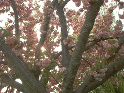
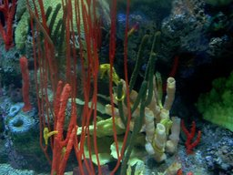
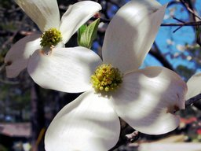
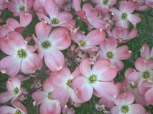
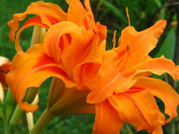

{kind=link}
{kind=link}
{kind=link}
{kind=link}
{kind=link}
{kind=link}
{kind=link}
{kind=link}
{kind=link}
{kind=link}
{kind=link}
{kind=link}
{kind=link}
{kind=link}
{kind=link}
{kind=link}
{kind=link}
{kind=link}
{kind=link}
![[Snowy Creek in Rockland Township, Pennsylvania]](images/snowy-creek.jpg)
{kind=link}
{kind=link}
{kind=link}
{kind=link}
{kind=link}
{kind=link}
{kind=link}
{kind=link}
{kind=link}
![[Spanish Moss on Merritt Island, Florida]](images/spanish-moss-tree.jpg)
Karg's
Wallpaper Photos
I use these photos for wallpaper on my computer.
Most modern desktops,
like KDE
or Gnome,
support wallpaper in JPEG format.
If your desktop does not, use The GIMP
or ImageMagick to convert it
to a BMP for your screen size.
I used ImageMagick to make
the thumbnails for this page. I just copied the images to another directory,
and ran:
mogrify -resize 256x thumbs/*.jpg
| I shot this using a Polaroid PDC1300 digital camera at Callaway Gardens. They have a butterfly center where thousands of tropical butterflies flutter freely through the air. You really have to know your camera. The PDC1300 is a dog when it comes to shooting action. But it shows off the butterfly wing motion quite well. | |
| I shot this using a Polaroid PDC1300 digital camera at Callaway Gardens. It is also tedious to change the settings, like the macro lens setting. It also doesn't give good white balance, so I usually end up using The GIMP to set the white or black level along with the gamma value. | |
| I shot this butterfly using a Canon PowerShot A75 digital camera at a local nature preserve. The Canon PowerShot A75 doesn't do pink, red, or purple flowers very well. Perhaps it has something to do with the auto white balance. The pink flowers are from an azalia bush. | |
| I shot this monarch butterfly using a Canon PowerShot A75 digital camera at a local nature preserve. The flowers are from an azalia bush. | |
|  | I shot this using a Polaroid PDC1300 digital camera at Montgomery College in Germantown, Maryland. The cherry and dogwood trees were bloom, and I was there for a meeting. I added a fill flash since the sun was behind the tree. |
|  | I photographed the coral using a Polaroid PDC1300 digital camera at the Tennessee Aquarium, located on the banks of the Tennessee River in Chattanooga, Tennessee. I had to color balance the photo using The GIMP. The color balance is located under Layers->Colors->Levels or Tools->Colors->Levels. Choose the black eyedropper and pick a spot on the photo that was supposed to be black. |
| I photographed a nearby stream using a Canon PowerShot A75 digital camera. The small stream is located down the street from my house. The camera has a slow action setting which I thought would work well on the white water. | |
| I photographed this dogwood tree in bloom in my front yard with a Canon Rebel 2000 with a Canon 75-300 telephoto lense. I scanned it and equalized the colors with The GIMP. | |
| I photographed this dogwood tree flower in my front yard with a Canon PowerShot A75 at full zoom with macro turned on. I equalized the colors with The GIMP. | |
|  | I kept photographing the same dogwood tree in my front yard from many different angles with a Canon PowerShot A75 at full zoom with macro turned on. Some photos turned out nice - some did not. |
| Hot air balloons photographed using a Canon Rebel 2000 with a 35-80 telephoto zoom lens, and scanned using an Epson Stylus CX4600 using XSane and The GIMP. The hot air balloons were at Callaway Gardens. | |
| Dogwood tree after an ice storm in Conyers, Georgia. Photographed with a Canon PowerShot A75. | |
| Dogwood tree after an ice storm in Conyers, Georgia. Photographed with a Canon PowerShot A75. | |
| I shot these oak tree branches against a blue sky since they gave a nice random look. Photographed with a Canon PowerShot A75. | |
| A view of the New River Gorge Bridge from the visitors center lookout. | |
| Pansies photographed at Callaway Gardens with a Polaroid PDC1300 digital camera, and script foo from The GIMP. | |
|  | I photographed this pink flowering dogwood using a Polaroid PDC1300 digital camera at Montgomery College in Germantown, Maryland. I stood on a wall and shot down toward the grass, and used a fill flash. |
| A ship being pulled into port by a tugboat photographed using a Canon Rebel 2000 with a 75-300 Canon telephoto zoom lens, and scanned using HP ScanJet4C. This was photographed from our BACnet meeting room atop a hotel in Victoria, Canada, during a break from the meeting. | |
| I photographed this view of the smoky mountains using a Polaroid PDC1300 digital camera. | |
|
|
Snowy Creek (Browns Run) in Rockland Township, Pennsylvania, photographed with a Canon Rebel 2000 with a 35-80 telephoto zoom lens, and scanned using an Epson Stylus CX4600 using XSane and The GIMP. |
| Trees at sundown in Conyers, Georgia. Shot with a Canon PowerShot A75. | |
| Tropical plants photographed inside the Butterfly Center at Callaway Gardens using a Polaroid PDC1300 digital camera. I white balanced (using a black point in the plants) the photo using The GIMP. | |
| Vegetables at a Conyers, Georgia, Kroger grocery store photographed using a Polaroid PDC1300 digital camera. I white balanced the photo using The GIMP. | |
| This is a photo of the sand at Perdido Key near Pensacola, Florida. I shot it with a Canon PowerShot A75, and thought it might make a great texture. | |
| I take quite a few photos of clouds in the sky. Usually out of an airplane window. I cropped the photo to get rid of the edge of the window using The GIMP. | |
| I took some pictures at Mimi's house of some of her flowers. She is a master gardner. This is an Oriental lily named Stargazer. I shot this with the Canon PowerShot A75. | |
|  | This Day Lily photo was taken at Mimi's house. She gave me a bunch of these for our yard. I hope they bloom like this! I shot this with the Canon PowerShot A75. |
| This Sunflower photo was taken at Mimi's house with our Canon PowerShot A75. Minimizing the background distractions made this a better photo out of the bunch I took. | |
| My brother Lou lives on Merritt Island in Florida. His house has lots of trees around it. This photo illustrates what you see when you look up. Photographed with the Canon PowerShot A75. | |
|
|
More spanish moss on trees from my brother Lou's house on Merritt Island in Florida. Shot with the Canon PowerShot A75. |
| This sunset was taken at Sims Elementary School in Conyers, Georgia. When taking a sunset photo, you often have to change the camera to manual mode so that you can underexpose the photo. Underexposing the photo will allow a more full color range in the sky. Fortunately, the Canon PowerShot A75 had manual mode! | |
| I was shooting some dolphins at the Sea World Dolphin Nursery in Orlando, Florida, and thought that a photo of the water would look great as a texture. Either that or I missed the dolphin as it swam by since digital cameras do not always capture the photo when you tell them to. Well, it also makes a nice desktop background. I cropped the photo a little to get rid of the edge of the tank using The GIMP. | |
| I shot this dandelion flower against a sheet of curved white poster board outdoors in the shade. The original showed the white poster as gray, so I used The GIMP to adjust the white balance. Photographed using a Canon PowerShot A75. | |
| I shot this dandelion flower against the pair of denim blue jeans that I was wearing. It was hard to get the Canon PowerShot A75 to focus on the flower, but out of the dozens of photos I took, this one seemed to have some focus. | |
| I shot this forsythia flower against a sheet of curved white poster board outdoors in the shade. The original showed the white poster as gray, so I used The GIMP to adjust the white balance. Photographed using a Canon PowerShot A75. | |
| I shot these forsythia flowers against the sky. | |
| This bunch of flowering trees was photographed using a Canon PowerShot A75 at a local nature preserve. | |
| The hillside had a whole lot of trees that had shed their leaves during a trip to Kentucky from Georgia in November, 2006. Photographed using our Canon Powershot A530 at 10:51am - but you would already know that if you looked at the EXIF data. | |
| We pulled over into a Scenic Overlook and took this photograph during our trip to Kentucky from Georgia in November, 2006. Photographed using our Canon Powershot A530 at 10:28am. |
Page created by The Karg Family
Photos Copyright (c) 2003-2006 by The Karg Family
{kind=link}
{kind=link}
{kind=link}
{kind=link}
{kind=link}
{kind=link}
{kind=link}
{kind=link}
{kind=link}